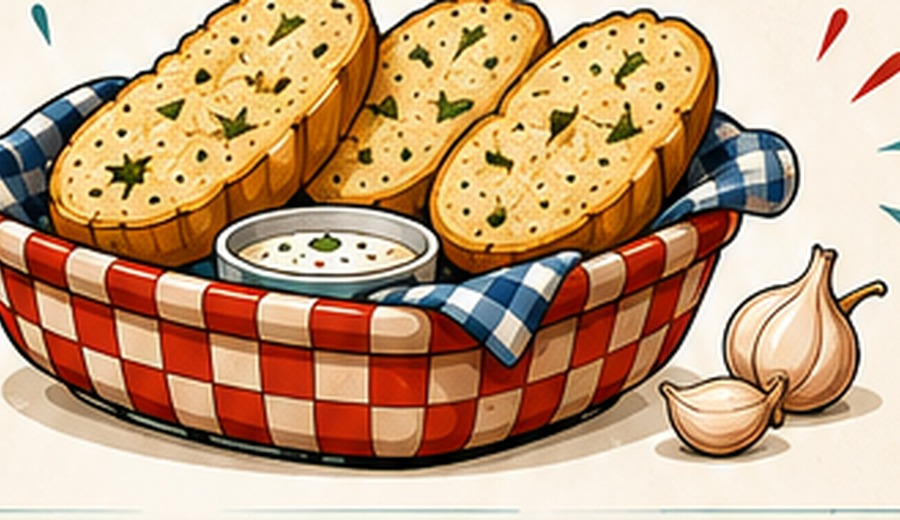

🦖 RETRO DINER • TUFF
Kodune toit.
Rex’i moodi.
Retrohõnguline diner Tuffis, kus Casey’si vana lugu elab edasi uue nime, tuttava menüü ja Rex’si enda näoga.

★ PLACE WITH A HISTORY
Casey’st Rex’sini.
Varem tunti meid Casey’s Dinerina Route 68 ääres. Tänane diner on selle loo järgmine peatükk — uues kodus, kuid tuttav retrohõng ja osa vanast menüüst on endiselt alles.
Loe meie lugu →⭐ SEL NÄDALAL
Midagi head on alati pakkumisel.
Igal nädalal paneme kokku uue eripakkumise. Vaata, mis seekord menüüsse sattus ja kui palju saad säästa.
Vaata selle nädala eripakkumist →
★ VISIT US
Tule läbi.
Kodune menüü, retro diner’i õhkkond ja tuttavad näod. Kõik muu leiad juba kohapealt.
Kontakt ja info →
FIND US IN TUFF
3056
SENORA WAY